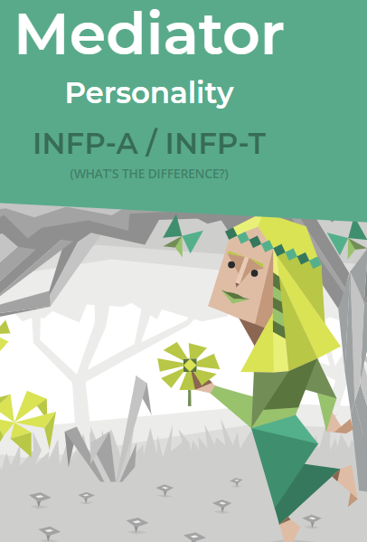
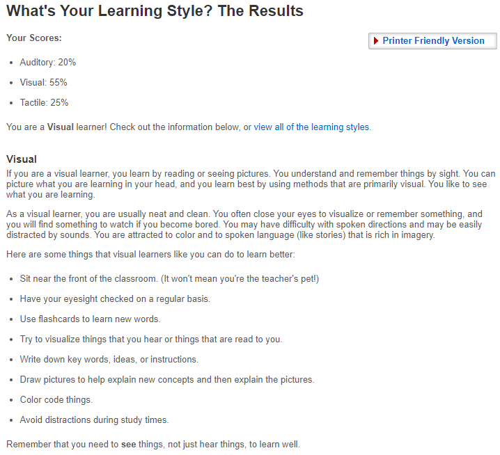
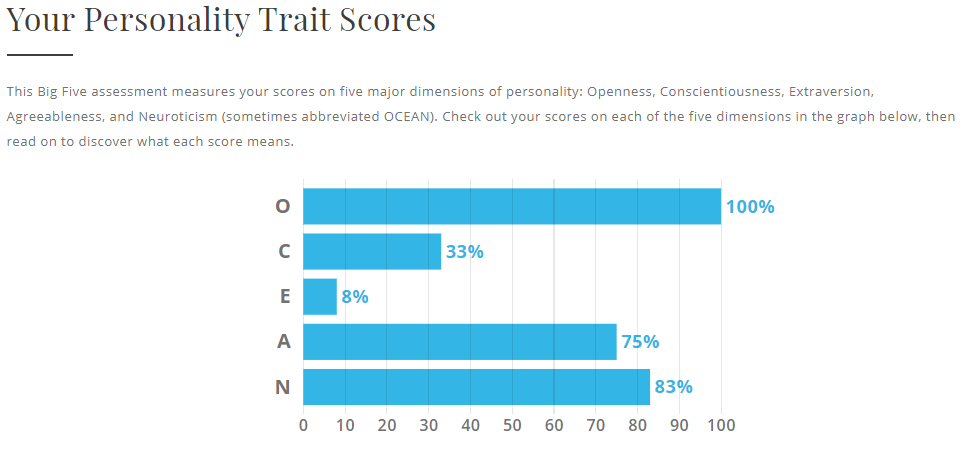

Myers-Briggs Test Result
Learning Style Test Result
The Big Five Personality Test Result
What does this mean for me?
The results of the tests imply that I am not a well-rounded individual. I am strong in certain areas, but I am lacking in others as revealed in my 'Five Big Personality Test'. The 'Myers-Briggs test' shows that I am a mediator - someone who is more creative than technical. The results also suggest that I am a visual learner, which means that I focus on attention to detail. I was surprised at the accuracy of how the results describe me. However, the results show a broad range, some of it was not accurate. I am also aware that I could make a mistake on some of the questions, which alters the results.
How will these results affect my behaviour in a team?
In a team environment, I will be able to push for creativity. However, I will need someone to offer direction and one who is good at communication.
How would you form a team?
While it is good to find like-minded individuals, there is also value in finding a team that can cover your weaknesses.